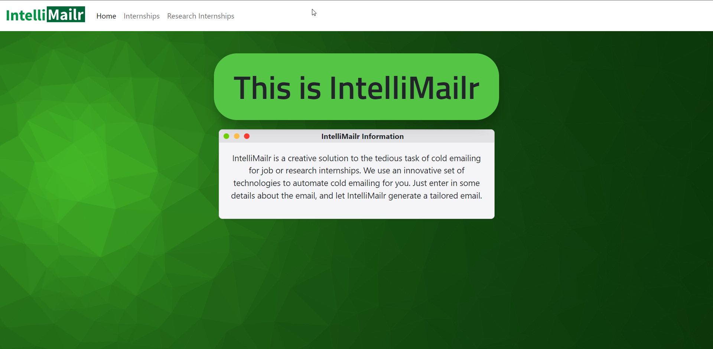
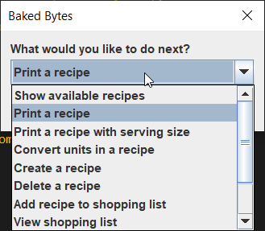
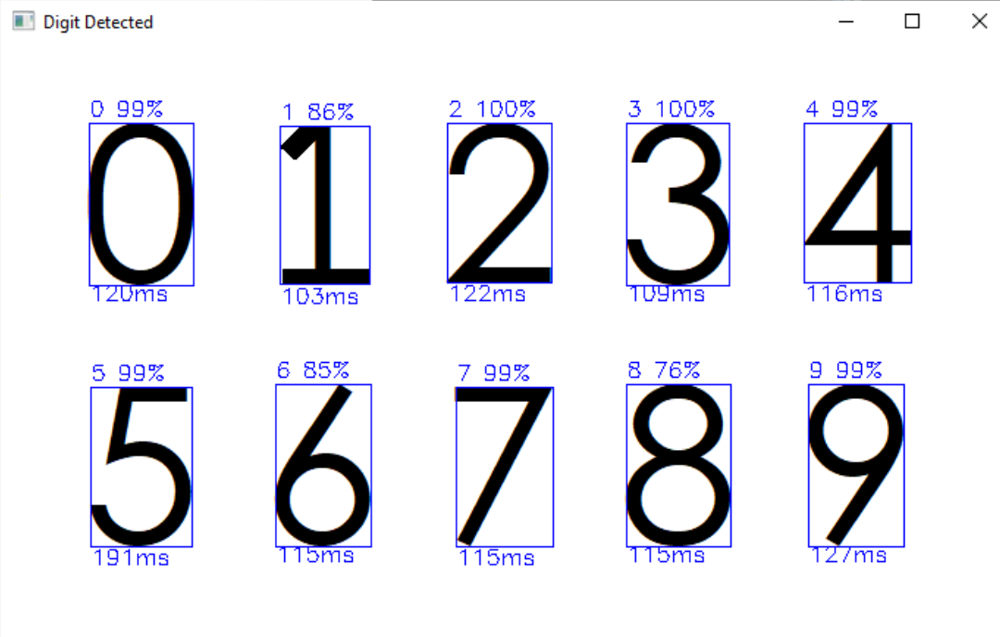
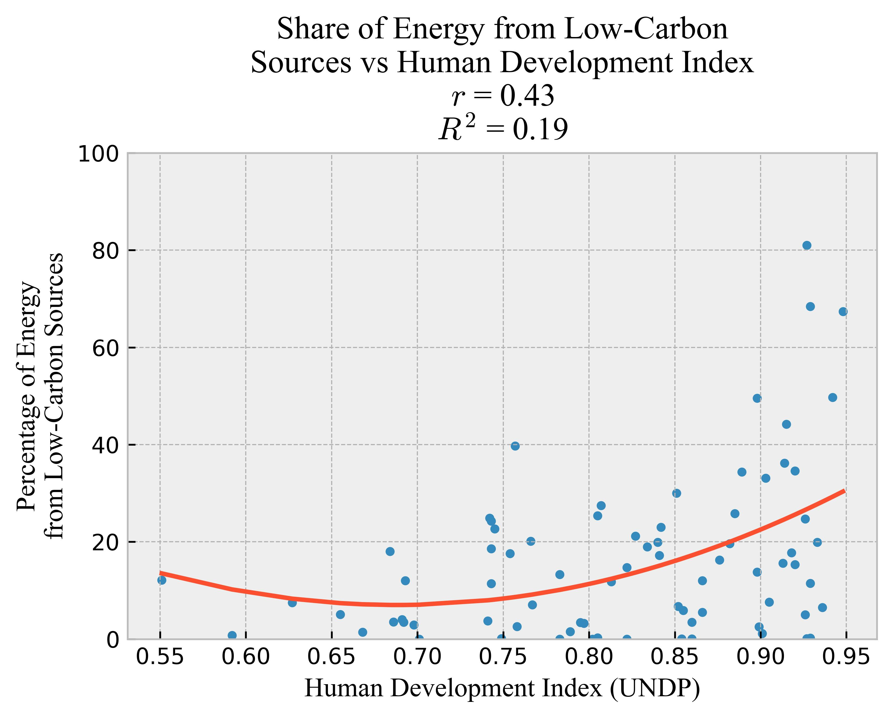
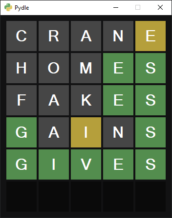
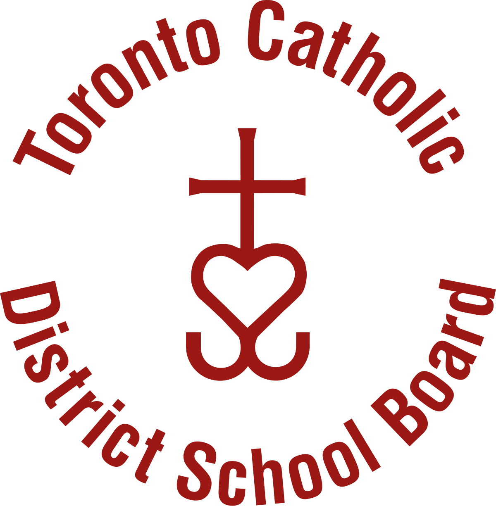
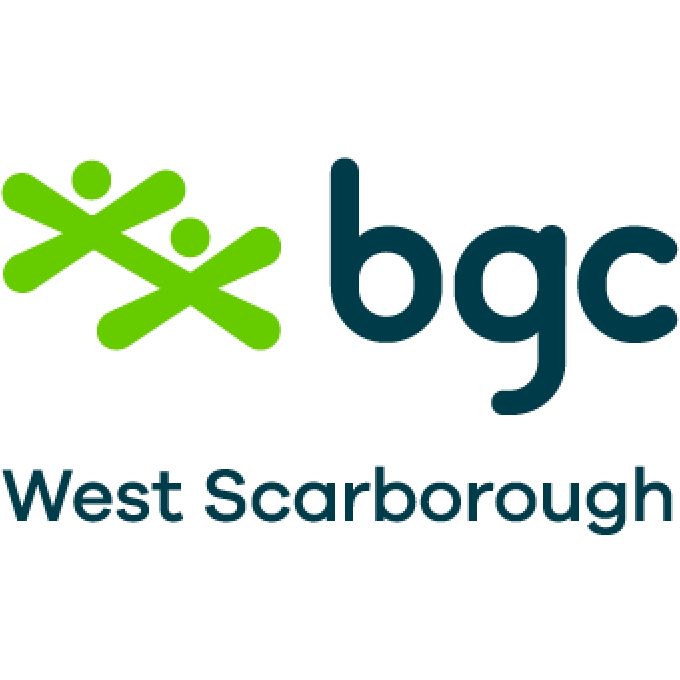
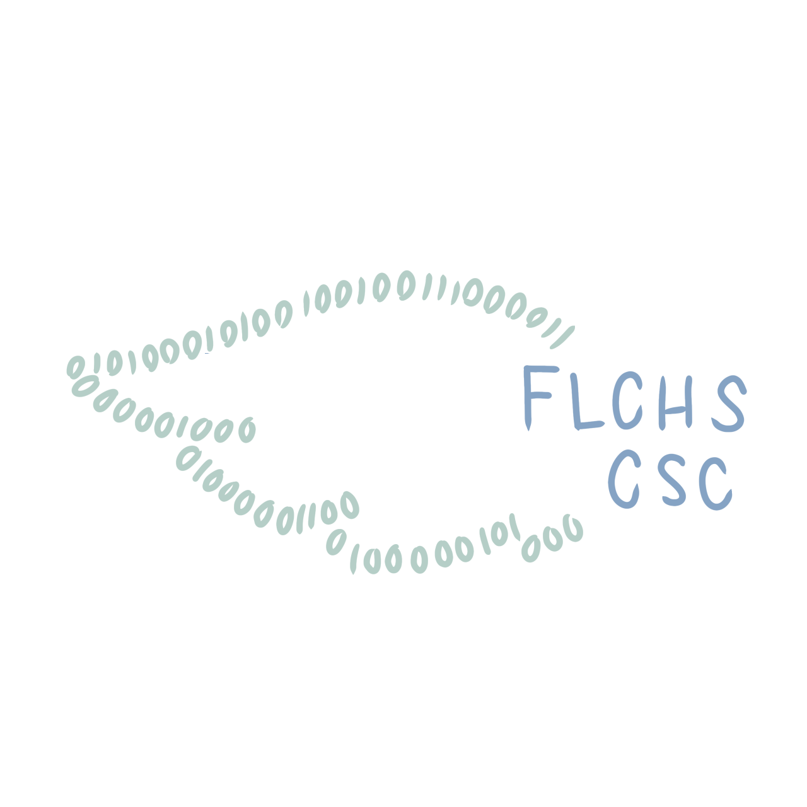
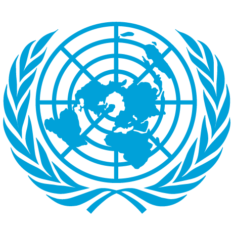
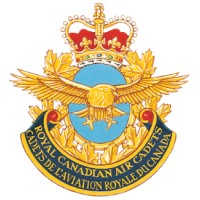

Hi, I'm Hanz Po
I'm currently a Grade 12 student at Francis Libermann CHS, as a part of the STEM & Environment SHSM programs. In my free time, I enjoy coding, reading, and learning languages.
Outside of class, I'm the President of the Model United Nations & Computer Science Clubs, as well as a co-lead of the Engineering Club.
Recently, I have started learning how to create web apps, and I'm looking for opportunities to build experience in software development.
Please don't hesitate to reach out!

Projects
Intellimailr - MetHacks 2023 Submission (Sponsored Award Winner)
At MetHacks 2023, I worked with a team of 3 to develop a full stack application intended to automate the process of writing and sending emails to companies. On the front-end, we utilized Bootstrap, along with HTML, CSS, and JavaScript, in order to quickly create a useable interface for the user. The backend was built using Python and the Flask framework, along with BeautifulSoup in order to scrape emails from the internet.
Tools: HTML, CSS, Javascript, Bootstrap, Python, Flask, Cohere, BeautifulSoup
View Repository
Recipe Assistant - Skills Ontario Competition Project (1st place)
I competed against representatives from 19 school boards across Ontario to create a program for a hypothetical bakery's to manage their recipes. I utilized Java to read and write to a database containing recipe information, display recipes in an accessible format, filter recipes based on dietary restrictions, and calculate ingredients based on provided servings.
Tools: Java, Maven, Eclipse
View Repository
Does A.I. See How We See? - Toronto Science Fair 2023 Project (Bronze Medal Winner)
This project was created for our school's Science Fair, and was selected as one of eight projects sent to continue to the Toronto Science Fair at University of Toronto Scarborough. In the project, my partner and I tested the performance of a neural network trained on the MNIST dataset of handwritten digits. We developed a graphical interface for the model, then analyzed various metrics of the model's performance in different conditions including font and colour. We found that typically, fonts that more closely resembled handwriting, such as Century Gothic, had a lower chance of incorrect identification compared to fonts that looked like that of a digital alarm clock. Colour also did not play a significant role in the accuracy of the model. Additionally, the model particularly struggled with the digits 6, 8, and 9.
Tools: Python, Keras, OpenCV, Pandas, Matplotlib, Numpy, Excel, Visual Studio Code, Git, Github
Exploring Economic Factors in Clean Energy Adoption Worldwide - STEM Fellowship High School Big Data Challenge 2022 Submission
This was my entry into a Data Science competition hosted by STEM Fellowship. The objective was to investigate information regarding UNESCO's Sustainable Development Goal 7, Affordable and Clean Energy. I decided to see how much of an impact certain economic factors can have on a country's decision to adopt clean energy. I used a Python library called Pandas and imported data from the Our World in Data project. Using Scikit-learn and Matplotlib, I discovered that generally speaking, countries with a higher Gross Domestic Product and Human Development Index were more likely to generate energy from clean sources. To complete the project, I added various maps and extra charts, using Geopandas and Draw.io. A final report was written and generated using Overleaf.
Tools: Python, Visual Studio Code, Jupyter Notebook, Matplotlib, Pandas, Numpy, Scikit-learn, Geopandas, Draw.io, Overleaf, Excel
View Repository
View Final Report
Pydle - A Clone of Wordle Written with Python
A clone of Wordle by the New York Times. Written with Python using the Tkinter library. Made for fun to practice Tkinter and learn how to use Github.
Tools: Python, Visual Studio Code, Tkinter, Git, Github
View Repository
Experience
Student Intern
Toronto Catholic District School Board | Co-op
Oct. 2022 - Jun. 2023
As a co-op student working with the TCDSB, I:
- Designed promotional material for board-wide events, including posters, videos, and animations
- Analyzed data regarding student involvement and participation in 31 high schools across Toronto
- Created PowerPoint slideshows to be used during presentations at Catholic Student Leadership events
After School Program Leader
Boys and Girls Club of West Scarborough | Contract Part-time
Sep. 2022 - Apr. 2023
In my role as an after school program leader, I:
- Ensured safe transportation of program participants from schools to community centre
- Planned and executed scheduled activities throughout the program
- Assisted participants when in need of help for homework, facilitating a healthy environment for learning
Camp Counselor (Focus on Youth Program)
Toronto Catholic District School Board | Contract Full-time
Jun. 2022 - Aug. 2022
Over the last summer, I worked as a Summer Camp Counselor, where I:
- Effectively communicated with peers in order to ensure a safe and organised environment
- Coordinated activities for children between the ages of 3 and 13
- Engaged with parents to confirm that their child(ren)'s needs were being met
Extracurriculars
Co-founder & President
Francis Libermann Computer Science Club
May 2023 - Present
I started the club because I wanted to change that by hosting workshops to teach students useful skills, as well as encouraging them
to find opportunities in order to enrich their learning. So far, our workshops have covered topics such as:
- basic programming concepts, such as conditionals, data types, functions, classes, and objects.
- overviews of how computers work in general, including technology such as compilers, interpreters, memory, and CPU instructions.
- how to find opportunities to improve their coding skills, such as hackathons, competitive programming sites like DMOJ, and YouTube channels like Neetcode for data structures/algorithms.
President
Francis Libermann Model United Nations Chapter
Sep. 2022 - Present
I was elected as the club at the end of last year, and currently carry out the following responsibilities:
- Facilitate training of all club members in preparation for conferences
- Organize school delegations to several conferences for the first time in club history
- Secure club funding, making conferences accessible to more students
Hacking Team Member

Hacking Club
Sep. 2020 - Present
During all of my time in high school, I have been a member of the hacking club, where I:
- Participate in Capture the Flag (CTF) events including PicoCTF 2021, 2022, and 2023
- Utilize various security technologies including Wireshark, Ghidra, Cyberchef, Metasploit, John the Ripper, Steghide, & Burp Suite
Sergeant
Royal Canadian Air Cadets
Sep. 2019 - Apr. 2022
During my time at my local air cadets squadron, I:
- Facilitated various aviation related in-class activities and lessons to peers as well as new recruits
- Collected contributions from donors in public areas in order to raise money for veterans and for the cadet program
Contact
Thank you very much for taking the time to read through my website! I hope to connect with you soon through one of the following: